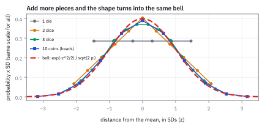
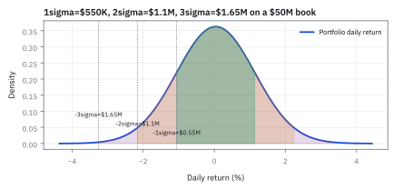
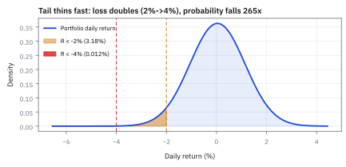
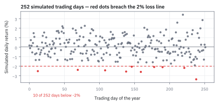
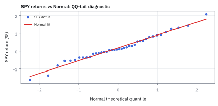
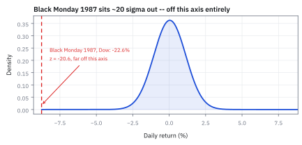

1.9 The Normal (Gaussian) Distribution and Quantile-Quantile (QQ) Diagnostics
เส้นระฆังดูดีตรงกลาง แต่อาจพลาดข้อมูลที่ปลายหาง
โยนเหรียญ 100 ครั้ง ได้หัวตั้งแต่ 60 ครั้งขึ้นไปบ่อยแค่ไหน? ถ้าใช้ Binomial จากหัวข้อ 1.5 ต้องบวก 41 พจน์ ซึ่งแต่ละพจน์มีตัวเลขยาวกว่า 25 หลัก
เฉลย: ราว 2.8% ถ้าบวกครบทุกพจน์จะได้ 2.84% แต่ปี 1733 Abraham de Moivre หาได้ 2.87% ในไม่กี่บรรทัด เพราะเขาเจอเส้นโค้งเรียบที่ทาบแท่ง Binomial ได้แทบพอดี ขั้นที่ 1 จะหาเส้นนั้นด้วยวิธีของเขา
เส้นโค้งนั้นคือ Normal distribution รูประฆังที่ใช้สรุปค่าเฉลี่ยกับความผันผวนด้วยตัวเลขสองตัว หัวข้อนี้สร้างมันขึ้นมา ใช้มันคิดความเสี่ยงของพอร์ต แล้วจบด้วย QQ plot ซึ่งใช้หาว่าข้อมูลจริงหลุดจากระฆังตรงไหน
ศัพท์ที่ใช้ในหัวข้อนี้
- Normal (Gaussian) distribution
- รูประฆังคว่ำที่สมมาตร กำหนดด้วยค่าเฉลี่ย μ และ variance σ² ใช้เป็นแบบจำลองตั้งต้นของผลตอบแทนและความคลาดเคลื่อน
- z-score
- ระยะห่างจากค่าเฉลี่ยวัดเป็นจำนวนเท่าของ σ คือ (x − μ)/σ ใช้เปลี่ยนระฆังทุกใบให้เป็นใบมาตรฐานใบเดียว
- standard normal Cumulative Distribution Function (CDF)
- พื้นที่ทางซ้ายของ z ใต้ระฆังที่มีค่าเฉลี่ย 0 และ standard deviation 1 เขียนว่า Φ(z) ใช้แปลง z-score เป็นโอกาส
- Central Limit Theorem (CLT)
- ข้อเท็จจริงที่ว่าผลรวมของชิ้นเล็ก ๆ จำนวนมากที่ไม่เกี่ยวกันมีรูปทรงเข้าใกล้ระฆัง ใช้อธิบายว่าทำไมระฆังโผล่ทุกที่ (พิสูจน์ในหัวข้อ 14.2)
- continuity correction
- การเลื่อนขอบครึ่งช่องตอนเอาเส้นโค้งไปประมาณแท่งที่กว้างแท่งละหนึ่ง ใช้ให้พื้นที่ใต้เส้นตรงกับแท่งที่ต้องการ (เห็นครั้งแรกในหัวข้อ 1.5)
- quantile
- ค่าที่มีข้อมูลอยู่ทางซ้ายตามสัดส่วนที่กำหนด เช่น quantile 1% คือค่าที่มีข้อมูลต่ำกว่ามันแค่ 1% ใช้ตั้งเกณฑ์ขาดทุน
- Value at Risk (VaR)
- ระดับขาดทุนที่วันส่วนใหญ่ไม่ควรแย่เกิน ณ ระดับความเชื่อมั่นที่กำหนด เช่น 99% ของวัน ใช้บอกขอบเริ่มต้นของหางซ้าย ไม่ใช่ขาดทุนสูงสุด
- Quantile-Quantile (QQ) plot
- กราฟที่จับคู่ข้อมูลจริงที่เรียงแล้วกับค่าที่ระฆังคาดไว้ที่อันดับเดียวกัน ใช้หาว่าข้อมูลหลุดจากระฆังตรงไหน โดยเฉพาะที่ปลายหาง
- fat tail
- การที่วันสุดขั้วเกิดบ่อยกว่าที่ระฆังทำนาย ใช้เป็นคำเตือนว่าระฆังผิดตรงจุดที่ความเสียหายหนักที่สุด
- kurtosis
- ค่าเฉลี่ยของ z กำลังสี่ ระฆังได้ 3 พอดี ข้อมูลที่ได้เกิน 3 มียอดแหลมกว่าและหางอ้วนกว่า เพราะพื้นที่ถูกดึงมาจากไหล่ของระฆัง ใช้วัดความอ้วนของหางเป็นตัวเลข
- Moment Generating Function (MGF)
- function เดียวที่เก็บทุก moment ไว้ ใช้ดึงค่าเฉลี่ยของ z กำลังใดก็ได้ออกมาโดยไม่ต้องคิดกลใหม่ (สร้างครั้งแรกในหัวข้อ 1.6)
- double factorial
- ผลคูณของเลขคี่หรือเลขคู่ลงมาทีละสอง เช่น 5!! = 5 × 3 × 1 = 15 ใช้เขียน moment กำลังคู่ของระฆังมาตรฐาน
- P&L
- Profit and Loss คือกำไรหรือขาดทุนของพอร์ตในช่วงหนึ่ง เป็นดอลลาร์ ใช้แปลงผลตอบแทนเป็นเงิน
- Student-t distribution
- รูประฆังที่มีหางอ้วนกว่า Normal ปรับความอ้วนได้ ใช้แทน Normal เมื่อข้อมูลมีวันสุดขั้วบ่อย (ใช้เต็มในบทที่ 17)
- Expected Shortfall (ES)
- ขาดทุนเฉลี่ยของวันที่แย่กว่าเกณฑ์ VaR ใช้วัดว่าเมื่อหลุดเข้าหางแล้วจะเจ็บแค่ไหน (สร้างเต็มในบทที่ 17)
สัญลักษณ์ที่ใช้ในหัวข้อนี้
| สัญลักษณ์ | ความหมาย | หน่วย |
|---|---|---|
| $\mu$, $\sigma$ | ค่าเฉลี่ย และ standard deviation | หน่วยเดียวกับข้อมูล |
| $K$ | ระยะห่างจากจุดกลางของเหรียญ 100 ครั้ง นับเป็นจำนวนหัว | ครั้ง |
| $f(x)$ | ความสูงของระฆังที่ $x$ | ต่อหนึ่งหน่วยของ $x$ |
| $Z$, $z$ | ตัวแปรบนระฆังมาตรฐาน และค่าหนึ่งของมัน คือระยะจากค่าเฉลี่ยเป็นจำนวนเท่าของ $\sigma$ | — |
| $\varphi(z)$, $\Phi(z)$ | ความสูง และพื้นที่ทางซ้าย ของระฆังมาตรฐานที่ $z$ | —, 0 ถึง 1 |
| $I$ | พื้นที่ใต้เส้น $e^{-z^2/2}$ ทั้งเส้น | — |
| $M_Z(t)$ | MGF ของ $Z$ | — |
| $(2k-1)!!$ | double factorial ของเลขคี่ $1\times3\times\cdots\times(2k-1)$ | — |
| $V$ | มูลค่าพอร์ต | USD |
| $R$ | ผลตอบแทนรายวันของพอร์ต | % ต่อวัน |
| $x$ | เกณฑ์ผลตอบแทน เช่น −2% | % ต่อวัน |
| $n$, $i$, $q_i$ | จำนวนวันใน QQ plot อันดับของวันหลังเรียง และค่าที่ระฆังคาดไว้ที่อันดับนั้น | วัน, —, % |
ทำไมระฆังโผล่ทุกที่: ลองบวกของเล็ก ๆ ดู
ลูกเต๋าลูกเดียวมีหกค่าที่โอกาสเท่ากัน กราฟแบนราบ พอบวกสองลูก ผลรวม 2 ถึง 12 เกิดได้ 1, 2, 3, 4, 5, 6, 5, 4, 3, 2, 1 แบบจาก 36 แบบ กลายเป็นสามเหลี่ยม พอบวกสามลูก ยอดเริ่มโค้งมน: 1, 3, 6, 10, 15, 21, 25, 27, 27, 25, 21, 15, 10, 6, 3, 1 แบบจาก 216 แบบ
แท่งของเหรียญ 10 ครั้งในหัวข้อ 1.5 ก็เป็นระฆังแล้ว ราคาหุ้นแต่ละวันคือผลรวมของคำสั่งซื้อขายเล็ก ๆ นับล้าน จึงมักออกมาหน้าตาใกล้ระฆัง ข้อเท็จจริงนี้ชื่อ Central Limit Theorem (CLT) ซึ่งจะพิสูจน์ในหัวข้อ 14.2 ตอนนี้แค่ดูว่ามันเกิดจริง
Figure 1.9a — บวกชิ้นเล็กเข้าไปเรื่อย ๆ รูปทรงเข้าหาระฆังใบเดียวกัน

ทุกเส้นถูกวัดเป็นระยะจากค่าเฉลี่ยในหน่วย standard deviation จึงเทียบกันได้ ลูกเต๋าลูกเดียวแบนราบ สองลูกเป็นสามเหลี่ยม สามลูกโค้งมน และเหรียญ 10 ครั้งแทบทับเส้นประแดงซึ่งคือระฆังที่หัวข้อนี้จะสร้าง
ที่มาที่ไป: เส้นโค้งที่เกิดเพราะการนับมันยากเกินไป
Abraham de Moivre เจอเส้นโค้งนี้ในปี 1733 ด้วยเหตุผลที่ไม่โรแมนติกเลย การนับผลของการโยนเหรียญหลายร้อยครั้งด้วยมือแทบทำไม่ไหว เขาจึงหาเส้นโค้งเรียบที่ทาบผลนั้นได้ เพื่อใช้ประมาณแทนการนับ
ต้นศตวรรษที่สิบเก้า Carl Friedrich Gauss ใช้เส้นเดียวกันอธิบายความคลาดเคลื่อนของการวัดตำแหน่งดาว และ Laplace แสดงว่าทำไมมันโผล่ซ้ำในเรื่องที่ไม่เกี่ยวกันเลย จุดสำคัญคือมันเกิดมาเป็นเครื่องมือประมาณการนับ ไม่ใช่กฎธรรมชาติของตลาด
ขั้นที่ 1 — แท่งของเหรียญ 100 ครั้งลดลงแบบไหน เมื่อออกห่างจากกลาง
ทำแบบ de Moivre: เทียบแท่งที่อยู่ติดกัน แท่ง 50 หัวสูงที่สุด แล้วถามว่าแท่งถัดไปเตี้ยลงกี่เท่า ใช้สูตรนับของหัวข้อ 1.5 กับทางลัด $\ln(1+x)\approx x$ ของหัวข้อ 1.6
บรรทัดแรก: หารสูตรนับของสองแท่งติดกัน แฟกทอเรียลตัดกันเกือบหมด เหลือเศษส่วนง่าย ๆ เช่นจาก 50 ไป 51 หัว แท่งเตี้ยลงเหลือ 50/51 เท่า
บรรทัดที่สองใส่ $\ln$ แล้วใช้ทางลัด ได้ว่าแต่ละก้าวเตี้ยลงราว $(2k+1)/50$ บรรทัดที่สามบวกก้าวทั้งหมดจาก 50 ไป 50+K ผลรวมของเลขคี่ K ตัวแรกคือ K² พอดี เช่น 1+3+5 = 9
ถอด $\ln$ กลับได้รูป $e^{-K^2/50}$ และ 25 ในตัวส่วนคือ variance ของเหรียญ 100 ครั้งพอดี เพราะ $npq$ = 100 × 0.5 × 0.5 สองบรรทัดล่างเทียบกับค่าจริงตรงถึงหลักที่สอง
ขั้นที่ 2 — ตั้งชื่อรูปทรงนี้: สูตรของ Normal
ขั้นที่ 1 ได้รูป $e^{-K^2/(2\sigma^2)}$ โดย $\sigma=5$ ถ้าเลื่อนจุดกลางไปที่ $\mu$ ใด ๆ และให้ความกว้างเป็น $\sigma$ ใด ๆ ได้สูตรทั่วไป ตัวคูณหน้าทำให้พื้นที่รวมเป็น 1 ซึ่งขั้นที่ 3 จะหามา
อ่านจากข้างใน: $x-\mu$ คือระยะจากจุดกลาง หาร $\sigma$ เพื่อวัดเป็นหน่วยความกว้าง แล้วคูณกับตัวเอง เครื่องหมายลบทำให้ยิ่งห่างยิ่งเตี้ย และเพราะระยะถูกคูณกับตัวเอง ความเตี้ยจึงมาเร็วมาก
ห่างหนึ่ง $\sigma$ ความสูงเหลือราว 61% ของยอด ห่างสอง $\sigma$ เหลือราว 14% นี่คืออัตราส่วนความสูง ไม่ใช่โอกาส สามบรรทัดล่างใช้สูตรเต็มทายแท่งกลางของเหรียญ 100 ครั้ง ได้ 7.98% เทียบค่าจริง 7.96%
ขั้นที่ 3 — ทำไมต้องหาร $\sqrt{2\pi}$: ลองวัดพื้นที่ก่อน แล้วค่อยพิสูจน์
นี่คือกลที่ยากที่สุดของบทที่ 1 เริ่มจากวัดด้วยตัวเลข: เรียงแท่งกว้าง 0.1 ใต้เส้น $e^{-z^2/2}$ จาก −6 ถึง 6 แล้วบวกพื้นที่ ได้ 2.5066 ซึ่งคือ $\sqrt{2\pi}$ พอดี ส่วนการพิสูจน์ใช้การมองพื้นที่เป็นภูเขาทรงกลม
คูณพื้นที่กับตัวเองได้ปริมาตรของภูเขาที่ความสูงขึ้นกับระยะจากจุดกลาง $r$ เท่านั้น ภูเขาแบบนี้หั่นเป็นวงแหวนได้ วงแหวนรัศมี $r$ หนา $dr$ มีพื้นที่ $2\pi r\,dr$ ตัว $r$ ที่งอกออกมานี้คือกุญแจ
ตั้ง $u=r^2/2$ ได้ $du=r\,dr$ ผลรวมเหลือ $e^{-u}$ ซึ่งมีพื้นที่ 1 พอดี ภูเขาจึงมีปริมาตร $2\pi$ พื้นที่ใต้เส้นเดี่ยวคือรากของมัน ต้องหาร $\sqrt{2\pi}$ ให้พื้นที่เป็น 1 และหาร $\sigma$ อีกครั้งเพราะแกนนอนถูกยืด $\sigma$ เท่า
ขั้นที่ 4 — ค่าเฉลี่ยคือ $\mu$ และ variance คือ $\sigma^{2}$: คำนวณออกมา ไม่ใช่ประกาศ
เปลี่ยนทุกระฆังเป็นระฆังมาตรฐานด้วย z-score แล้วหาสองค่าของระฆังมาตรฐาน เครื่องมือมีแค่ความสมมาตรกับการ integrate ทีละส่วน
ค่าเฉลี่ยของ $Z$ ได้ฟรีจากความสมมาตร ครึ่งขวาดึงขึ้นเท่าที่ครึ่งซ้ายดึงลงพอดี ส่วนค่าเฉลี่ยของ $Z^2$ ใช้กล: ความชันของ $\varphi$ คือ $-z\varphi$ พอดี จึง integrate ทีละส่วนได้
ก้อนขอบเป็นศูนย์เพราะที่ $z=10$ ระฆังสูงแค่ราว $10^{-22}$ คูณ 10 ก็ยังเป็นศูนย์ ก้อนที่เหลือคือพื้นที่ใต้ระฆังซึ่งขั้นที่ 3 บอกว่าเป็น 1 สามบรรทัดล่างแปลงกลับเป็นหน่วยจริง
ทำไม desk ต้องการ moment ที่สี่: หางของข้อมูลจริงอ้วนกว่า
ค่าเฉลี่ยของ z กำลังสี่เรียกว่า kurtosis ระฆังได้ 3 พอดี แต่ผลตอบแทนรายวันของ SPY ในปี 2024 ได้ 4.70 ช่วงที่มีวิกฤติได้สูงกว่านี้มาก ตัวเลขนี้คือสัญญาณเตือนตัวแรกว่าหางของข้อมูลจริงอ้วนกว่าระฆัง จึงต้องรู้ว่าระฆังเองให้ค่าเท่าไร
ใช้ MGF จากหัวข้อ 1.6 ได้ทุก moment ในรอบเดียว ไม่ต้อง integrate ทีละส่วนซ้ำ ๆ ในทางปฏิบัติ quant มักดูข้อมูลจริงถึง moment ที่สี่ เพราะ moment ที่สูงกว่านั้นแกว่งแรงมากเมื่อมีวันสุดขั้วแค่วันเดียว
ขั้นที่ 5 — MGF ของระฆังมาตรฐาน และ moment กำลัง 1 ถึง 10
รวม $tz$ เข้ากับ $-z^2/2$ ให้เป็นกำลังสองของ $z-t$ แล้วระฆังที่เลื่อนไป $t$ ยังมีพื้นที่ 1 เท่าเดิม
$tz-z^2/2$ เท่ากับ $-(z-t)^2/2+t^2/2$ ตรวจได้ด้วยการกางวงเล็บ ก้อน $e^{t^2/2}$ ไม่มี $z$ จึงออกมานอก integral ที่เหลือคือระฆังที่เลื่อนไป ซึ่งมีพื้นที่ 1
กางอนุกรมแล้วมีแต่ $t$ กำลังคู่ moment กำลังคี่จึงเป็นศูนย์หมด ตรงกับความสมมาตร ส่วนกำลังคู่เทียบตัวคูณหน้า t แต่ละกำลังได้ 1, 3, 15, 105, 945 ตัวที่สี่คือ 3 ซึ่งเป็นเกณฑ์ที่ใช้เทียบ 4.71 ของ SPY
ขั้นที่ 6 — ตอบคำถามเปิด: หัวตั้งแต่ 60 ครั้งจาก 100
ใช้ระฆังที่มีค่าเฉลี่ย 50 และ $\sigma=5$ แท่ง 60 กินช่วง 59.5 ถึง 60.5 จึงเริ่มวัดพื้นที่ที่ 59.5 ตาม continuity correction
ระฆังให้ 2.87% เทียบค่าจริง 2.84% ด้วยการคำนวณสามบรรทัดแทนการบวก 41 พจน์ ถ้าลืมเลื่อนครึ่งช่องแล้วเริ่มที่ 60 จะได้ 2.28% ต่ำไปราวหนึ่งในห้า
จากเหรียญสู่พอร์ต: โจทย์ของ risk desk
พอร์ตหุ้นมูลค่า \$50 ล้าน มีผลตอบแทนรายวันเฉลี่ย 0.04% และความผันผวนรายวัน 1.1% ฝ่ายความเสี่ยงถามสามข้อ: วันที่ขาดทุนเกิน 2% เกิดปีละกี่วัน วันที่ขาดทุนเกิน 4% ล่ะ และขาดทุนระดับไหนที่ 99% ของวันไม่ควรแย่เกิน
ข้อมูลตั้งต้นของพอร์ต \$50 ล้าน
| สัญลักษณ์ | ค่า | ความหมาย |
|---|---|---|
| $V$ | \$50,000,000 | มูลค่าพอร์ต |
| $\mu$ | 0.04% ต่อวัน | ผลตอบแทนเฉลี่ยรายวัน |
| $\sigma$ | 1.1% ต่อวัน | ความผันผวนรายวัน |
| วันเทรดต่อปี | 252 | ใช้แปลงโอกาสรายวันเป็นจำนวนวันต่อปี (ที่มาของ 252 อยู่ในหัวข้อ 1.1) |
Figure 1.9b — รูปร่างของพอร์ตนี้ และพื้นที่ภายใน 1σ, 2σ, 3σ

68.3% ของวันอยู่ภายใน 1σ, 95.4% ภายใน 2σ และ 99.7% ภายใน 3σ แปลงเป็นเงินของพอร์ต \$50 ล้าน ได้ 1σ เท่ากับ \$550,000 2σ เท่ากับ \$1.1 ล้าน และ 3σ เท่ากับ \$1.65 ล้าน นี่คือสเกลของวันปกติเทียบกับวันร้ายแรง
ส่วน A — วันที่ขาดทุนเกิน 2% เกิดบ่อยแค่ไหน
ของที่มี: ค่าเฉลี่ย 0.04% ความผันผวน 1.1% และเกณฑ์ −2% ทุกตัวอยู่ในหน่วยเปอร์เซ็นต์ต่อวันเดียวกัน ขั้นที่ 7 ถึง 9 ทำสามอย่าง: แปลงเกณฑ์เป็น z อ่านพื้นที่หางซ้าย แล้วแปลงเป็นจำนวนวัน
ขั้นที่ 7 — แปลงเกณฑ์ −2% เป็น z-score
เกณฑ์อยู่ห่างจากค่าเฉลี่ยกี่เท่าของความผันผวน
ขาดทุน 2% อยู่ทางซ้ายของค่าเฉลี่ย 1.855 เท่าของความผันผวนรายวัน เครื่องหมายลบบอกว่าอยู่ฝั่งขาดทุน
ขั้นที่ 8 — อ่านพื้นที่หางซ้ายจาก $\Phi$
$\Phi$ ไม่มีสูตรพีชคณิตปิด จึงเปิดตารางหรือกด norm.cdf
ตารางให้ $\Phi(-1.85)=0.0322$ และ $\Phi(-1.86)=0.0314$ จุด −1.855 อยู่กึ่งกลางจึงได้ราว 0.0318 ตรงกับ norm.cdf(-1.855)
ขั้นที่ 9 — แปลงเป็นจำนวนวันต่อปี
คูณโอกาสรายวันด้วยจำนวนวันเทรดในหนึ่งปี
ขาดทุนเกิน 2% ราว 8 วันต่อปี หรือราวทุกหกสัปดาห์ เป็นความผันผวนปกติที่พอร์ตต้องรับได้โดยไม่ตกใจ
ส่วน B — วันที่ขาดทุนเกิน 4% เกิดบ่อยแค่ไหน
ทำซ้ำสามขั้นเดิม เปลี่ยนเกณฑ์เป็น −4% ซึ่งไกลกว่าเดิมสองเท่า ลองเดาก่อนว่าโอกาสจะลดลงสองเท่า สิบเท่า หรือมากกว่านั้น
ขั้นที่ 10 — แปลงเกณฑ์ −4% เป็น z-score
สูตรเดิม เกณฑ์ใหม่
เกณฑ์ใหม่อยู่ลึกไปทางซ้ายราว 3.7 เท่าของความผันผวน ไกลกว่าส่วน A เกือบสองเท่า
ขั้นที่ 11 — อ่านพื้นที่หางซ้ายที่ z = −3.673
จุดนี้ฝังลึกในหางซ้าย ต้องใช้ norm.cdf เพราะตารางทั่วไปไม่ละเอียดพอ
เหลือแค่ราวหนึ่งในหนึ่งหมื่นวัน ทั้งที่เกณฑ์ไกลขึ้นแค่สองเท่า
ขั้นที่ 12 — แปลงเป็นจำนวนวันต่อปี แล้วเทียบกับส่วน A
คูณ 252 วันเหมือนเดิม แล้วหารโอกาสของสองส่วนกัน
ราวหนึ่งครั้งใน 33 ปี เทียบกับ 8 วันต่อปีของส่วน A ขยับเกณฑ์สองเท่า โอกาสลดลง 265 เท่า เพราะระยะถูกคูณกับตัวเองในเลขชี้กำลัง ระฆังจึงตายเร็วกว่าเส้นตรงมาก
z-score ที่ risk desk ใช้บ่อย
| ระดับความเชื่อมั่น | พื้นที่หางซ้าย | $z$ |
|---|---|---|
| 90% | 10% | −1.282 |
| 95% | 5% | −1.645 |
| 99% | 1% | −2.326 |
สามตัวนี้คือการอ่านตาราง $\Phi$ ย้อนกลับ: หา $z$ ที่ทำให้พื้นที่หางซ้ายเท่ากับ 10%, 5% และ 1% พอดี กด norm.ppf(0.01) ได้ −2.326 ใช้เมื่อโจทย์ให้ระดับความเชื่อมั่นมาแล้วถามหาเกณฑ์ ซึ่งเป็นทิศตรงข้ามกับส่วน A และ B
Worked Example — โจทย์จิ๋วที่คำนวณได้
โจทย์ให้อะไรมาบ้าง: ค่าเฉลี่ยรายวัน 0.04% ความผันผวนรายวัน 1.1% และเกณฑ์ขาดทุน −2% ต้องแปลงเกณฑ์เป็น z-score แล้วอ่านพื้นที่หาง
คำตอบ: z เท่ากับ −2.04 หาร 1.1 ได้ราว −1.855 และพื้นที่หางซ้ายราว 3.18% หรือราว 8 วันต่อปี
ตรวจเองใน 10 วินาที: กด (-2-0.04)/1.1 ต้องได้ราว −1.855 เครื่องหมายต้องเป็นลบเพราะเกณฑ์อยู่ต่ำกว่าค่าเฉลี่ย ถ้าได้บวกแปลว่าลบกลับด้าน
แปลว่าอะไร: แบบจำลองคาดวันขาดทุนเกิน 2% ราว 8 วันใน 252 วัน กับดักคือเชื่อหางของระฆังโดยไม่ดู QQ plot ของข้อมูลจริง ซึ่งขั้นที่ 15 จะทำ
ส่วน C — ขาดทุนระดับไหนที่ 99% ของวันไม่ควรแย่เกิน
คราวนี้โจทย์ให้พื้นที่หางมาก่อน คือ 1% แล้วถามหาเกณฑ์ ใช้ $z=-2.326$ จากตาราง แล้วพลิกสูตร z-score กลับ ตัวเลขที่ได้คือ 1-day 99% VaR
ขั้นที่ 13 — พลิกสูตร z-score กลับเพื่อหาเกณฑ์ผลตอบแทน
เริ่มจาก $z=(x-\mu)/\sigma$ คูณสองข้างด้วย $\sigma$ แล้วบวก $\mu$
ภายใต้ระฆัง มีแค่ 1% ของวันที่ผลตอบแทนต่ำกว่า −2.519% ตัวเลขนี้คือ quantile 1% ของผลตอบแทนรายวัน
ขั้นที่ 14 — แปลงเป็นเงินบนพอร์ต \$50M
เก็บทศนิยมไว้ก่อนคูณมูลค่าพอร์ต แล้วค่อยปัด
P&L ที่จุดตัดติดลบราว \$1.26 ล้าน รายงานเป็น VaR ได้ว่า \$1.26 ล้าน นี่คือขอบเริ่มต้นของหาง 1% ไม่ใช่ขาดทุนเฉลี่ยในหาง และไม่ใช่ขาดทุนสูงสุด วันที่หลุดเข้าหางอาจเสียมากกว่านี้หลายเท่า
Figure 1.9c — หางบางลงเร็วแค่ไหนเมื่อเกณฑ์ขยับจาก 2% เป็น 4%

พื้นที่แดงเข้มคือขาดทุนเกิน 4% ซึ่งเล็กจนแทบมองไม่เห็นเทียบกับพื้นที่ส้มของขาดทุนเกิน 2% เกณฑ์ห่างกันแค่สองเท่า แต่โอกาสต่างกัน 265 เท่า
Figure 1.9d — 252 วันจำลอง: กี่วันตกในโซนขาดทุนเกิน 2%

สุ่มหนึ่งปีเทรด 252 วันจากระฆังของพอร์ตนี้ ทฤษฎีคาดราว 8 วัน รอบสุ่มนี้ได้ 10 วัน ความต่างนี้คือความผันแปรปกติของตัวอย่าง 252 วัน ไม่ใช่สูตรผิด โอกาสจึงเป็นจำนวนวันที่นับได้จริงในปฏิทิน
QQ plot: ตรวจว่าข้อมูลจริงหลุดจากระฆังตรงไหน
ทุกตัวเลขข้างบนเชื่อว่าผลตอบแทนเป็นระฆัง วิธีตรวจคือ QQ plot: เรียงผลตอบแทนจริงจากแย่สุดไปดีสุด แล้วจับคู่แต่ละวันกับค่าที่ระฆังคาดไว้ที่อันดับเดียวกัน ถ้าข้อมูลเป็นระฆังจริง ทุกคู่จะเรียงเป็นเส้นตรง
อ่านกราฟแบบนี้: ปลายซ้ายที่งอลงใต้เส้นแปลว่าวันแย่ที่สุดแย่กว่าที่ระฆังยอมให้ ปลายขวาที่งอขึ้นเหนือเส้นแปลว่าวันดีที่สุดดีกว่าที่ระฆังคาด ถ้างอทั้งสองปลายแบบตัว S คือหางอ้วน
ขั้นที่ 15 — สร้างจุดแรกของ QQ plot ด้วยมือ: วันที่แย่ที่สุดของ SPY ปี 2024
ข้อมูลชุดเดียวกับหัวข้อ 1.1: ผลตอบแทนทั้ง 252 วันเทรดของปี 2024 ค่าเฉลี่ย 0.086% ความผันผวน 0.793% วันที่แย่ที่สุดคืออันดับ 1 จึงอยู่ที่สัดส่วน 0.5 ใน 252 นับจากซ้าย
ลบ 0.5 เพื่อให้แต่ละวันอยู่กลางช่องของตัวเอง ไม่ใช่ที่ขอบ วันแย่สุดจึงได้ช่องแรกจาก 252 ช่อง ระฆังคาดว่าวันแย่สุดของปีควรอยู่ราว −2.20% แต่ของจริงคือ −2.98% จุดนี้จึงอยู่ใต้เส้นไป 0.78 จุด
นับอีกแบบก็เห็นเหมือนกัน: วันที่ต่ำกว่าค่าเฉลี่ยเกิน 2 เท่าของความผันผวนมี 9 วัน ขณะที่ระฆังคาดแค่ 5.7 วัน
Figure 1.9e — QQ plot ของ SPY ปี 2024 ทั้ง 252 วัน

แต่ละจุดคือหนึ่งวัน เส้นดำคือระฆังที่มีค่าเฉลี่ยและความผันผวนเท่ากัน ตรงกลางจุดเกาะเส้นดี แต่ปลายซ้ายงอลงใต้เส้น จุดแดงหกจุดคือวันที่แย่กว่าที่ระฆังคาดเกิน 0.25 จุด ส่วนปลายขวาเกาะเส้นกว่า ตลาดปีนี้จึงลงแรงกว่าขึ้น
ขั้นที่ 16 — Black Monday 1987 ในสายตาของระฆัง
19 ตุลาคม 1987 ดัชนี Dow Jones ร่วง 22.6% ในวันเดียว ลองวัดด้วยระฆังของพอร์ตเรา ซึ่งมีความผันผวนรายวัน 1.1%
ระฆังบอกว่าวันแบบนี้มีโอกาสราวสองในสิบยกกำลัง 94 ต่อวัน ต่อให้ตลาดเปิดทุกวันตั้งแต่เกิดจักรวาล ซึ่งราว 5 ล้านล้านวัน ก็ไม่ควรเห็นแม้แต่ครั้งเดียว แต่มันเกิดขึ้นจริง ปัญหาจึงอยู่ที่ระฆัง ไม่ใช่ที่โชค
Figure 1.9f — Black Monday 1987 เทียบกับที่ระฆังทำนาย

แกนนอนของกราฟยาวถึงแปดเท่าของความผันผวน แต่จุด −22.6% อยู่ห่างออกไปถึง 20.6 เท่า ไกลจนวาดไม่ถึง ความสูงของระฆังตรงนั้นเป็นศูนย์ในทุกทางปฏิบัติ
กับดัก: เลือกระฆังแล้วต้องตรวจหางด้วย
คำนวณถูกตามสูตรยังให้คำตอบผิดกับข้อมูลได้ พอเลือกระฆัง เราก็เลือกโอกาสของหางไปด้วยโดยไม่รู้ตัว Black Monday มีโอกาสราว $10^{-94}$ ตามระฆัง แต่เกิดขึ้นจริง และ SPY ปีที่สงบอย่าง 2024 ยังมีวันแย่เกิน 2 เท่าของความผันผวนมากกว่าที่ระฆังคาดเกือบสองเท่า อย่าเรียกเหตุการณ์ว่าเป็นไปไม่ได้เพียงเพราะแบบจำลองให้โอกาสเล็ก
ข้อจำกัด: วิธีนี้สมมติอะไร และของจริงเป็นอย่างไร
| เรื่อง | วิธีนี้สมมติว่า | ของจริงเป็นอย่างไร | ผลที่ตามมาเวลาใช้งาน |
|---|---|---|---|
| ปลายหาง | วันเลวร้ายเกิดน้อยมาก | เกิดบ่อยกว่าที่สูตรบอกหลายเท่า | ประเมินความเสี่ยงต่ำเกินจริงตรงจุดที่สำคัญที่สุด |
| ความสมมาตร | ขึ้นกับลงมีโอกาสเท่ากัน | ตลาดหุ้นลงแรงและเร็วกว่าขึ้น เช่น SPY 2024 เบ้ซ้าย | แบบจำลองมองไม่เห็นความเสี่ยงขาลงที่แท้จริง |
| ความคงที่ | ความผันผวนคงที่ | ความผันผวนเปลี่ยนตลอดและมาเป็นกลุ่ม | ช่วงสงบดูปลอดภัยเกินจริง ช่วงผันผวนดูน่ากลัวเกินจริง |
ทั้งสามแถวคือเหตุผลที่หัวข้อนี้จบด้วย QQ plot ไม่ใช่จบด้วยการยืนยันว่าระฆังใช้ได้
แปลว่าอะไรให้ risk desk: ระฆังคือพื้น ไม่ใช่เพดาน
ตัวเลขทั้งหมดในหัวข้อนี้ตั้งบนระฆัง จึงควรอ่านเป็นขั้นต่ำของความเสี่ยง: 8 วันต่อปีที่ขาดทุนเกิน 2% และ VaR \$1.26 ล้านที่ 99% คือสิ่งที่ต้องเตรียมรับอย่างน้อย ข้อมูลจริงมักมีหางอ้วนกว่าและความผันผวนที่เปลี่ยนไปตามเวลา
เครื่องมือที่รับหางอ้วนได้คือ Student-t distribution และตัวชี้วัดที่ถามว่าเข้าหางแล้วเจ็บแค่ไหนคือ Expected Shortfall ทั้งสองอย่างจะสร้างเต็มในบทที่ 17
โค้ดเทียบเหรียญ 100 ครั้งกับระฆัง แล้วคิดหางของ SPY
from math import comb, exp, sqrt, pi, factorial
from statistics import NormalDist
N = NormalDist()
P = lambda k: comb(100, k) / 2 ** 100
assert abs(P(55) / P(50) - 0.609) < 5e-4 and abs(P(60) / P(50) - 0.136) < 5e-4
assert abs(P(50) - 0.0796) < 5e-5 and abs(1 / (5 * sqrt(2 * pi)) - 0.0798) < 5e-5
area = sum(exp(-(i / 10) ** 2 / 2) * 0.1 for i in range(-100, 101))
assert abs(area - sqrt(2 * pi)) < 1e-6
assert [factorial(2 * k) // (2 ** k * factorial(k)) for k in range(1, 6)] == [1, 3, 15, 105, 945]
assert abs(1 - N.cdf(1.9) - 0.0287) < 5e-5 and abs(sum(P(k) for k in range(60, 101)) - 0.0284) < 5e-5
z2 = (-0.02 - 0.0004) / 0.011
assert abs(z2 + 1.855) < 5e-4 and abs(N.cdf(z2) - 0.0318) < 5e-5 and round(252 * N.cdf(z2)) == 8
z4 = (-0.04 - 0.0004) / 0.011
assert abs(z4 + 3.673) < 5e-4 and abs(N.cdf(z4) - 0.00012) < 5e-6
assert round(1 / (252 * N.cdf(z4))) == 33 and round(N.cdf(z2) / N.cdf(z4)) == 265
x = 0.0004 + N.inv_cdf(0.01) * 0.011
assert abs(x + 0.02519) < 5e-6 and abs(50e6 * x + 1_259_491) < 50
zi = N.inv_cdf(0.5 / 252) # worst of the 252 days of 2024
assert abs(zi + 2.881) < 5e-4 and abs(0.00086 + 0.00793 * zi + 0.0220) < 5e-4
assert abs(252 * (1 - N.cdf(2)) - 5.7) < 0.05 # days beyond 2 SD the bell expectsโค้ดเทียบแท่ง Binomial จริงกับ e ยกลบ K²/50 วัดพื้นที่ใต้ระฆังได้ราก 2π ตรวจ moment ของ Normal และคิดวันขาดทุน 2% ราว 8 วันต่อปี กับ VaR 1% ราว \$1.26 ล้าน
สรุปที่ใช้ได้จริง
- ระฆังเกิดจากการบวกชิ้นเล็กจำนวนมาก แท่งของเหรียญ 100 ครั้งเตี้ยลงแบบ $e^{-K^2/50}$ พอดี และทายหัว 60 ครั้งขึ้นไปได้ 2.87% เทียบค่าจริง 2.84%
- ระฆังกำหนดด้วยสองตัวเลข คือค่าเฉลี่ยและความผันผวน ตัวคูณ $1/(\sigma\sqrt{2\pi})$ มีไว้ให้พื้นที่เป็น 1
- z-score เปลี่ยนทุกโจทย์เป็นระฆังมาตรฐานใบเดียว แล้วอ่านพื้นที่จาก $\Phi$ หรือพลิกกลับหาเกณฑ์ด้วย $x=\mu+z\sigma$
- หางของระฆังตายเร็วแบบ $e^{-z^2/2}$ ขยับเกณฑ์ขาดทุนจาก 2% เป็น 4% โอกาสลดลง 265 เท่า
- ตลาดจริงมีหางอ้วนกว่าระฆัง ตรวจด้วย QQ plot เสมอ SPY 2024 มีวันแย่สุด −2.98% ขณะที่ระฆังคาด −2.20% และ Black Monday มีโอกาสตามระฆังแค่ราว $10^{-94}$